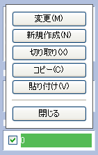

着せ替えの作り方
着せ替えゲームの基本的な作り方について説明します。
作成の手順
1. ファイルを用意します
はじめに、着せ替えゲーム用のフォルダを作成します。 そのフォルダの中に着せ替えで使う画像（以下、この画像を「セル」と呼びます）全てと、下記の３つのファイルを入れます。
- siori.js
- index.html
- tool.html
セルの画像形式は JPEG, GIF, PNG が使用できます。服などのセルは透明部分が必要になるので、GIF か PNG 形式を使用します。 通常のセルはPNG形式（フルカラーも可）を使用して、アニメーションが必要なセルのみGIFを使用することをおすすめします。 本バージョンは IE6 においてもフルカラーPNGを表示することが可能になりました。
2. しおりのどうぐばこを起動します
tool.html をブラウザで開いて、しおりのどうぐばこを起動します。 起動するとメインメニューが表示されます。
大きな貼り付けフォームがありますが、新規作成の場合は何も入力せず空欄のままで構いません。 セット選択が「セットNo.0」の「セル」になっているのを確認して、 「編集モードへ移行する」をクリックします。
編集モードへ移行すると、新規作成の場合は右側のパネルに下図のメッセージが表示されます。 メッセージをクリックして、セルの情報入力ダイアログを表示します。ファイルドラッグ機能に対応するブラウザの場合は、 メッセージの上に画像ファイルをドラッグ＆ドロップしてセルを新規作成することができます。

3. セルの情報を入力します
セルの新規作成時や編集時に、下図のセルの情報入力ダイアログが表示されます。
ファイル名の欄に表示したい画像のファイル名を指定します。 ファイル名を直接入力するか、「参照」ボタンを押してファイルダイアログから画像を選びます。 その他の欄や詳細については、セルの情報入力についてをご覧ください。 入力が終わったらＯＫを押します。
リストパネルから作成されたセルの項目をクリックすると、セル編集メニューが表示されます。

入力を間違えた場合は「変更」を選ぶと、再度入力できます。 「新規作成」を選ぶと、新しいセルを追加作成します。 セルの重なる順番を替えるには「切り取り」を選んで切り取って、挿入したい位置で「貼り付け」を選びます。 またはこのメニューを閉じている状態で項目をドラッグすると順番を並び替えることができます。
4. セルを配置してデータを貼り付けます
セルをドラッグして配置を行います。編集が終わったらパネルの「メインメニュー」をクリックします。 メインメニューに戻ると、貼り付けフォームにデータが表示されます。このフォームのデータを全て選択してコピーします。
次に index.html（テンプレートファイル）をメモ帳などのテキストエディタで開き、 先ほどコピーしたデータを下記の場所に貼り付けてください。 貼り付けが終わったら index.html を保存します。
/**************************************************************************/ /* ↓ しおりのどうぐばこのフォームデータをここに貼り付けてください ↓ */ /**************************************************************************/ (この位置に貼り付けます)
以上で作成終了です。index.html をブラウザで開いて、着せ替えが遊べたら完成です。
補足
- テンプレートファイルは、好みに合わせて自由に編集していただいて構いません。
- テンプレートファイルに貼り付けしたデータを全てコピーして、 しおりのどうぐばこのフォームに貼り付けることで、データ作成後の再編集が行えます。 再編集したデータをテンプレートファイルに再び貼り付ける場合は、 以前の貼り付けデータが残らないように、全て削除してから貼り付けてください。
- しおりのどうぐばこは遊ぶときには必要ありません。完成後にネットなどで公開する場合は、 tool.html を削除して公開することを強くおすすめします（再編集する場合は、再びご用意ください）。
セルの情報入力について
セルの新規作成／編集時に下図のダイアログが表示されます。入力例は下図の通りです。 ファイル名以外の項目は必要がない場合は空欄のままで構いません。
- ファイル名 指定必須
-
画像のファイル名を指定します。省略はできません。「http://」からのフルURL指定も可能です。
参照ボタンを押すとファイルダイアログが表示され、リストから画像ファイルを選ぶことができます。 但し選択できるのは、セキュリティの制限のため tool.html と同じフォルダにある画像のみとなります。 参照ボタンはブラウザのファイルアップロード機能を利用していますが、ファイル名の取得のみに使用しており、 しおりのどうぐばこがアップロードすることは一切ありません。
- グループ名
-
セルをグループ化する場合に指定します。グループ化すると複数のセルを一緒に動かすことができます。 例えば服のセルに裏地や襟のセルを作ってグループ化すると、服をよりリアルに表現できます。 グループ化したいセルに同じグループ名を指定します。
- グループ名は半角英数字（0〜9 A〜Z a〜z と「_」）のみで指定して、なるべく短い名前にすることをおすすめします。 他の文字を使用すると正常に動作しなくなる可能性があります。
- グループ化できるセルの数に制限はありませんが、数が多いと処理が重くなるので、１つのグループにつき数個程度に留めておいたほうが良いでしょう。
一覧ボタンを押すと下図のサブダイアログが表示され、現在使用しているグループ名の一覧がリストアップされます。 一度入力したグループ名はリストから選ぶことが可能になり、入力の手間を軽減できます。 リセットを選択すると、グループ名を削除します。
- クリック数
-
セルを固定する場合は 1 以上の数値を半角で指定します。固定せずに自由に動かす場合は空欄にします。 指定した回数がクリックされるまではセルが動かなくなります。1000 などの大きな数値を指定することで、実質的に完全に固定できます。
グループ化されたセルでは、番号が一番小さいセルのみの設定が有効になります。 それ以外のセルに指定した場合は、しおりのどうぐばこが自動修正するので、実際にはどのセルに指定しても問題はありません。
しおりのどうぐばこでの編集作業中には効果は現れません。テンプレートファイルの貼り付け後に設定が有効になります。
- コメント
- コメントを表示する場合に指定します。マウスポインタをセルの上に乗せたときに、ポップアップして表示されます。
補足
- ダイアログでは、Escキーを押すとキャンセル、テキストフォーム内でEnterキーを押すとOKを実行します。
セルの情報入力では次の文字は使用できません。
半角スペース 全角スペース \ < > " ' , ;
セットについて
セットとは、セルの位置と表示状態を記録することができる機能です。最大５つまでのセットを設定することができます。 セットを切り替えると、表示するキャラクターを変更したり、着せる服を変えることができます。
セット０は、ゲーム開始時に最初に表示しますので、少なくともセット０（セル）の設定が必要です。 セットには（セル）と（スナップ）の２種類があります。
（セル）
セルの位置と表示状態を設定します。遊ぶ時は（セル）に設定した通りに表示されます。
（スナップ）
スナップとは、セルをドラッグしてドロップした時に、多少位置がずれていても指定した位置に吸着する機能です。 （スナップ）にはセルを吸着する位置を設定します。吸着する必要がない場合は（スナップ）の設定は不要です。
（セル）と（スナップ）は、セットごとにペアになっています。 例えば「セット１（セル）」のスナップ設定は「セット１（スナップ）」で行います。
スナップをキャラクターに対して設定すると、服を着せやすくすることができます。設定の方法は下図の通りです。
- （セル）と（スナップ）の両方で、キャラクターの位置を同一にそろえます。
- （セル）では、遊ぶ時に表示される服の位置を設定します。
- （スナップ）では、キャラクターに全ての服を着せます。
（スナップ）の補足
- （スナップ）のセルは通常全て表示状態にします。非表示にしたセルはスナップが設定されません。 非表示にすることで、一部のセルだけをスナップしないようにすることができます。
- ちょっと裏技ですが、スナップが１種類だけで良い場合は、 セット０（スナップ）を設定するだけで、全セットのセルが共通にスナップされます （スナップが２種類以上の場合は、使用セット全ての分に設定が必要です）。
セット全般の補足
- セットはセルの位置と表示状態を個別に設定できますが、セル自体は全セット共通で使用します。 そのためセルの追加／削除などの編集は、全セットに影響します。
- 特定のセットで非表示にしたいセルは、削除せずに非表示にします。削除すると全てのセットで表示されなくなります。
- 新規作成したセルは、初期状態では全セットで表示します。表示したくないセットがある場合は、非表示に切り替える必要があります。
動作設定について
テンプレートファイルの設定を変更すると、遊ぶ時の動作設定を行うことができます。
設定項目
- conf.snapRange
- セルをスナップする範囲を設定します。単位はピクセルです。数が大きいほどスナップする範囲が広がります。初期値は20です。 （例: 10を設定すると、スナップ位置が X=100 Y=100 のセルは、X=90〜110 Y=90〜110 の範囲にある場合にスナップされます）
- conf.titleDelay
- タイトルの表示時間を設定します。1000で１秒になります。
タイトルの変更
起動時のセルの読み込み中にタイトルが表示されます。タイトルを画像に変更する場合は、次のようにします。
<!-- タイトルここから（変更／削除可能です）--> <div id="title"> <img src="(画像ファイル名)" width="(横サイズ)" height="(縦サイズ)" alt=""> </div> <!-- タイトルここまで -->
次のようにすると、タイトルを表示しないようにすることができます。
<!-- タイトルここから（変更／削除可能です）--> （この中の行を全部削除します） <!-- タイトルここまで -->
Copyright © 2011 by みなみせい All Rights Reserved.